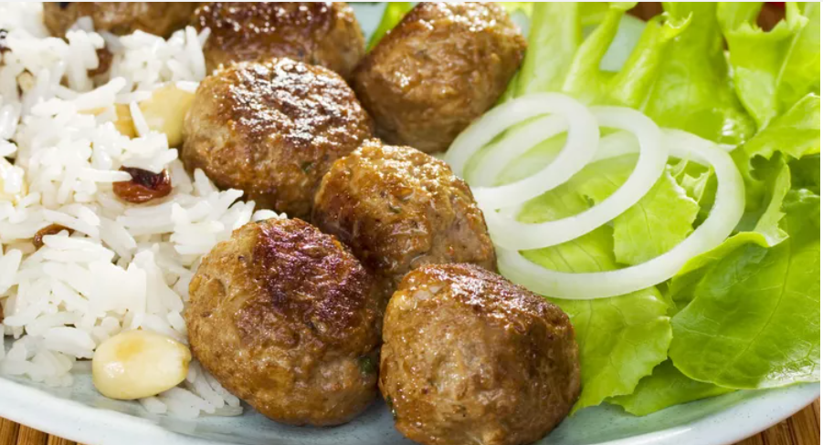

Kufta Recipe

Description
Kufta is made at least a few times a month in different forms. Sometimes grilled, sometimes baked with veggies or even in a tahini sauce. This recipe is really easy to put together and makes for a delicious meal with rice and salad.
Ingrediants
- 2 lbs of ground beef (85/15)
- 1 cup of parsley
- 2 garlic cloves
- Salt & pepper to taste
- 1/2 an onion
- 1/2 a red bell pepper
- 1-2 tbsp allspice or seven spice
- 2 small potatoes cut into thin slices
- 1 onion cut into slices
- 1 bell pepper cut into slices
- 1 tbsp tomato paste
Steps
- In a food processor, blend the bell pepper, garlic, onion, and parsley until fine.
- Add that mixture to the ground beef. Season generously with salt and pepper. Also, add the allspice and mix all together. Do not overwork the meat.
- Take a handful of the meat and shape using the palm of your hands into what looks like a small chubby sausage! I think they look like mini footballs! You can shape them however you like though
- In a bowl, mix together the olive oil, tomato paste, salt, and pepper. To that, mix in the veggies and toss. Let them get coated well with this mixture.
- In the desired nonstick baking pan, stack the koftas with veggies in between. Top with some slices of bell pepper too.
- Cover with aluminum foil and bake covered on 375 F for 45 minutes and 15 minutes uncovered. Enjoy with some bread or rice!